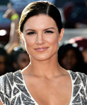
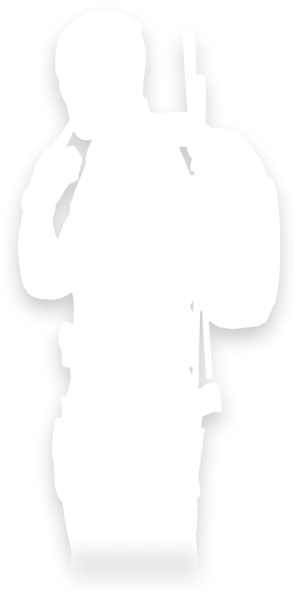
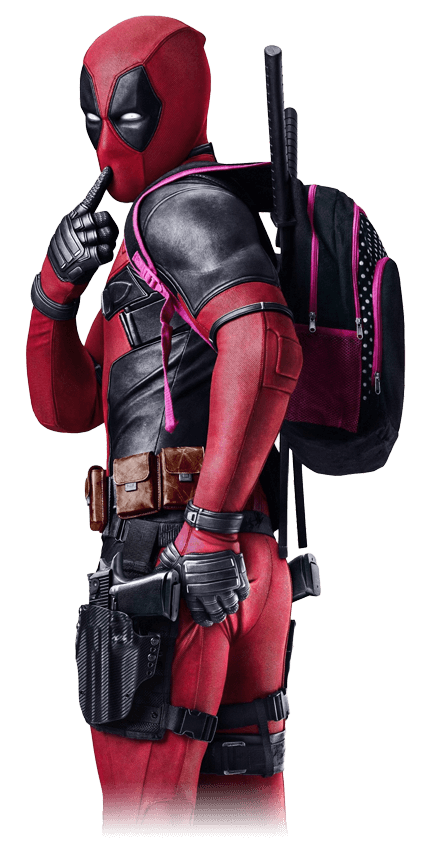
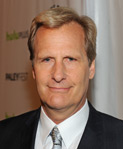
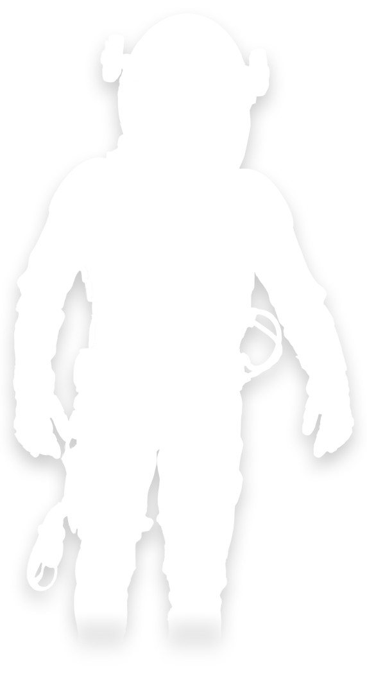
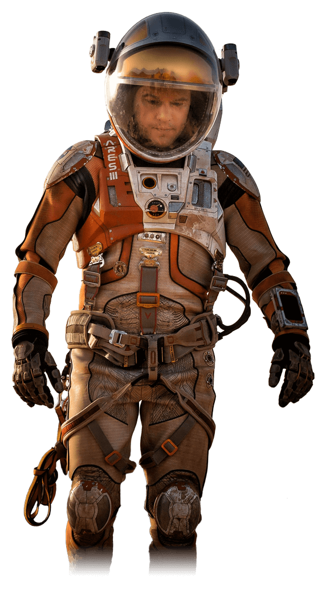
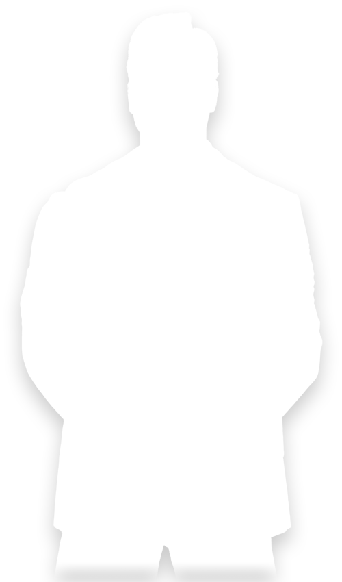
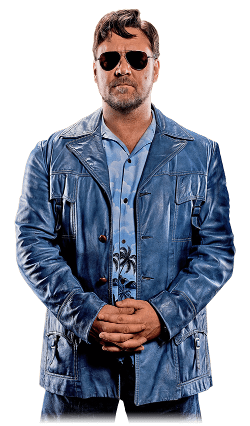
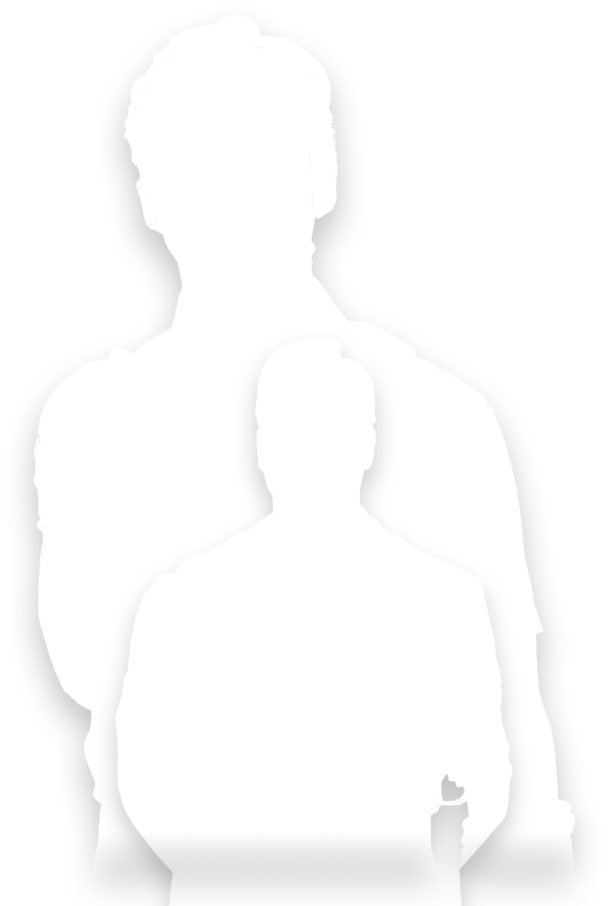
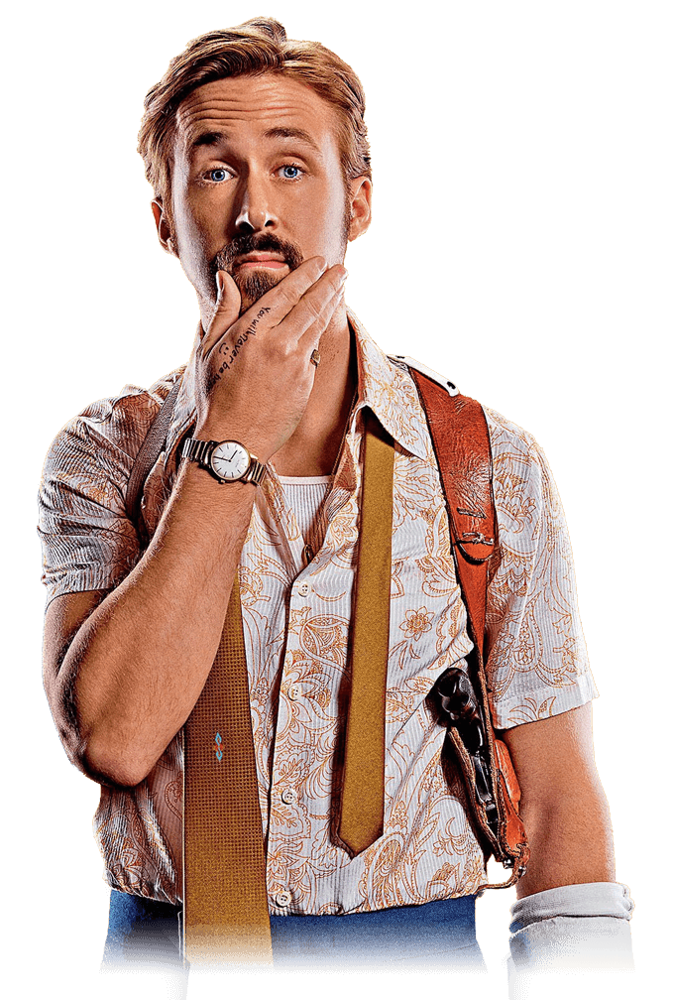

Deadpool
Action/comedy | 1h48m | 2016
ABOUT
Based upon Marvel Comics’ most unconventional anti-hero, DEADPOOL tells the origin story of former Special Forces operative turned mercenary Wade Wilson, who after being subjected to a rogue experiment that leaves him with accelerated healing powers, adopts the alter ego Deadpool. Armed with his new abilities and a dark, twisted sense of humor, Deadpool hunts down the man who nearly destroyed his life.
CAST

WATCH TRAILER
- 2 min 40 sec


The Martian
Action/adventure | 2h24m | 2015
ABOUT
During a manned mission to Mars, Astronaut Mark Watney (Matt Damon) is presumed dead after a fierce storm and left behind by his crew. But Watney has survived and finds himself stranded and alone on the hostile planet. With only meager supplies, he must draw upon his ingenuity, wit and spirit to subsist and find a way to signal to Earth that he is alive.
CAST

WATCH TRAILER
- 3 min 08 sec


The Nice Guys
Action/comedy | 1h56m | 2016
ABOUT
"The Nice Guys" takes place in 1970s Los Angeles, when down-on-his-luck private eye Holland March (Gosling) and hired enforcer Jackson Healy (Crowe) must work together to solve the case of a missing girl and the seemingly unrelated death of a porn star. During their investigation, they uncover a shocking conspiracy that reaches up to the highest circles of power.
CAST
WATCH TRAILER
- 3 min 01 sec



